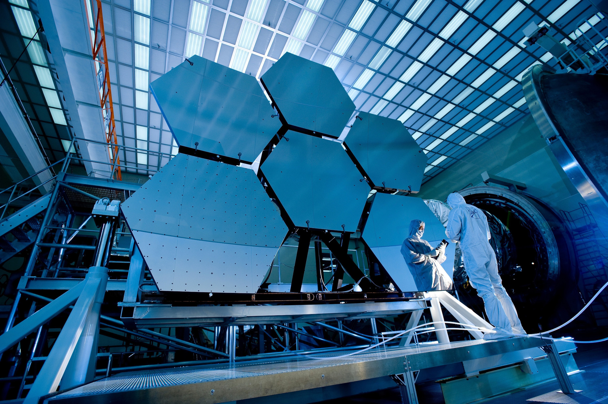

O Telescópio James Webb, programado para ser lançado em 2021, representa um avanço significativo na exploração espacial. Equipado com tecnologia de infravermelho de ponta, este observatório espacial permitirá a análise detalhada de regiões cósmicas distantes, revelando segredos do universo que há muito tempo intrigam os cientistas. Sua missão promete expandir nosso conhecimento sobre o cosmos de maneiras impressionantes.
Por:RibahDev
Ler mais

As estrelas funcionam através da fusão nuclear. No núcleo, onde há pressão e temperatura extremas, átomos de hidrogênio se fundem para formar hélio, liberando uma enorme quantidade de energia na forma de luz e calor. Isso cria uma pressão interna que equilibra a força gravitacional, mantendo a estrela estável. O equilíbrio entre a gravidade e a pressão é fundamental para o funcionamento contínuo de uma estrela. À medida que o hidrogênio no núcleo se esgota, estrelas mais massivas podem continuar a fundir elementos mais pesados, enquanto estrelas menores se transformam em gigantes vermelhas antes de eventualmente esfriarem ou explodirem em supernovas. Esse ciclo de fusão e evolução define a vida de uma estrela.
Ler mais

É possível observar aglomerados de estrelas a olho nu, desde que estejam relativamente próximos e não obscurecidos pela poluição luminosa. Exemplos notáveis incluem o aglomerado estelar das Plêiades na constelação de Touro e o aglomerado do Trapézio em Orion. Essas coleções de estrelas brilham intensamente devido à proximidade umas das outras, tornando-as visíveis mesmo em áreas urbanas.
O universo é vasto e misterioso, composto por bilhões de galáxias, cada uma abrigando bilhões de estrelas e sistemas planetários. Ele tem cerca de 13,8 bilhões de anos desde o Big Bang, o evento que marcou o início do universo observável. O universo está em constante expansão, o que significa que as galáxias estão se afastando umas das outras ao longo do tempo.
A matéria visível, como estrelas, planetas e galáxias, compõe apenas cerca de 5% do universo. A maior parte é constituída por matéria escura, que não emite luz e é detectada apenas por sua influência gravitacional, e energia escura, que está acelerando a expansão do universo.
A exploração espacial e a astronomia nos proporcionaram insights notáveis sobre o cosmos. Descobrimos exoplanetas em zonas habitáveis, buracos negros gigantes no centro das galáxias e evidências de água em outros corpos celestes.
A busca por vida extraterrestre continua, enquanto procuramos entender os mistérios do universo, como a natureza da matéria escura e da energia escura.
O universo é um tesouro de descobertas científicas e inspiração, desafiando-nos a expandir nosso conhecimento e nossa compreensão do nosso lugar nele. É um lembrete da vastidão e da beleza do desconhecido, que continua a intrigar e fascinar a humanidade.
Ler mais